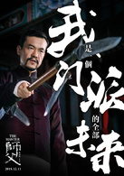
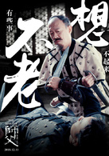
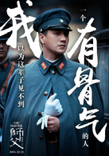

主角介绍 |
|
|---|---|
陈识演员：廖凡 |

|
赵国卉演员: 宋佳 |
|
邹榕 |
|
郑山傲 |

|
耿良辰 |

|
林希文 |

|
来到天津，一心开武馆。但是天津武林规矩森严，对于外来人想要在天津开武馆立足，挑战非同小可，稍有不慎，心愿无法达成且性命也很难保全。
师父与师娘在西餐厅一见钟情并结下连理，在师父开武馆立足、完成咏春北上使命的一路上，师娘始终无言陪伴、守候左右，谱写了一段乱世下的挚诚之恋
着整个江湖，然而这盘大棋却因咏春师徒的出现而乱了阵脚。地位举足轻重，老骥伏枥，一句“不想老”说出他英雄暮年的真实心声也恰恰道出他的困境。
耿良辰是个初生牛犊不怕虎的刺头，虽然他拜师的本意是觊觎师娘美色，但练功踢馆使得他阴差阳错成了天津街头的传奇。